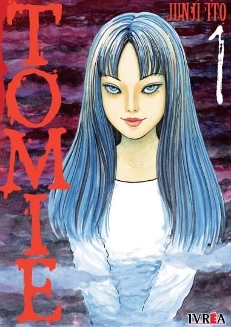

Tomie

Tomie narra la vida y la muerte (y más vidas y más muertes) de Tomie Kawakami, una chica hermosa y distante que genera
odios y pasiones entre sus compañeros de clases, al punto que cuando creen que murió en un accidente, deciden
descuartizarla en 42 cachitos y llevarse cada uno un pedacito de su cuerpo para eliminar las evidencias.
Lo que no se imaginaban es que su compañerita iba a volver para vengarse de las maneras más crueles y truculentas,
ya que cualquier parte de su cuerpo sirve para generar una nueva Tomie, con perturbadores habilidades.